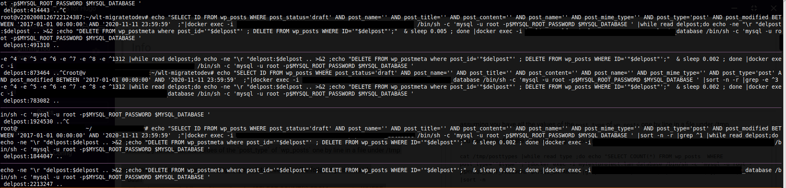

Migrating and clean up incredible slow wordpress instances with a database messed by misuse and abuse of gravityforms and advanced custom fields
before operation
transfer your database:
- Example: transfer a single database like this:
docker exec myrealproject.lan_database /bin/sh -c 'mysqldump -u root -p$MYSQL_ROOT_PASSWORD $MYSQL_DATABASE ' |docker exec -i mytestproject.lan_database /bin/sh -c 'mysql -u root -p$MYSQL_ROOT_PASSWORD $MYSQL_DATABASE ' &
- Example: transfer 2 single tables in background ( use
waitbefore next step) like this ( here we transferwp_post[s|postmeta]) :
docker exec myrealroject.lan_database /bin/sh -c 'mysqldump -u root -p$MYSQL_ROOT_PASSWORD $MYSQL_DATABASE wp_postmeta' |docker exec -i mytestproject.lan_database /bin/sh -c 'mysql -u root -p$MYSQL_ROOT_PASSWORD $MYSQL_DATABASE ' &
docker exec myrealproject.lan_database /bin/sh -c 'mysqldump -u root -p$MYSQL_ROOT_PASSWORD $MYSQL_DATABASE wp_posts' |docker exec -i mytestproject.lan_database /bin/sh -c 'mysql -u root -p$MYSQL_ROOT_PASSWORD $MYSQL_DATABASE ' &
- ! be sure to have no load (night time , test environment)
- use a separate mysql console to run
OPTIMIZE TABLE wp_posts;OPTIMIZE TABLE wp_postmeta;SQL command like this:
docker exec -it mytestproject.lan_database /bin/sh -c 'mysql -u root -p$MYSQL_ROOT_PASSWORD $MYSQL_DATABASE -e "OPTIMIZE TABLE wp_posts;OPTIMIZE TABLE wp_postmeta;"'
post-types
assuming you have all the values of the post_type of wp_posts one by line in a file under /tmp
you can easily find the ones messing up your database using the following command:
cat /tmp/posttypes |while read type ;do echo "SELECT COUNT(*) FROM wp_posts WHERE post_type='"$type"';"|docker exec -i mytestproject.lan_database /bin/sh -c 'mysql -u root -p$MYSQL_ROOT_PASSWORD $MYSQL_DATABASE'|grep -v COUNT |tr -d '\n'; echo " "$type" " ;done |sort -n
clean up posts with no users
once ..
- you put all the
post_autorID’s in/tmp/post_auth - and the current numeric users list in
/tmp/post_users
the following will help to delete all posts that have no current user:
cat /tmp/post_auth |grep -v '^..$' |grep -v ^.$ | while read auth;do grep ^$auth$ /tmp/post_users || { echo $(date -u )" deleteing posts for uid" $auth ;echo "select ID from wp_posts where post_author='"$auth"'" |docker exec -i mytestproject.lan_database /bin/sh -c 'mysql -u root -p$MYSQL_ROOT_PASSWORD $MYSQL_DATABASE ' |grep -v ^ID$|while read delpost;do echo delpost:$delpost >&2 ;echo "DELETE FROM wp_postmeta where post_id='"$delpost"' ; DELETE FROM wp_posts WHERE ID='"$delpost"';" & done |docker exec -i mytestproject.lan_database /bin/sh -c 'mysql -u root -p$MYSQL_ROOT_PASSWORD $MYSQL_DATABASE ' ; } ; done &
Cleaning empty posts due to misuse of gravity forms and/or advanced custom fields
since it migh happen that everything becomes a post , your wp_posts table gets filled quickly, once it reaches some million entry it will be slow as hell , clean it out with the following command ( and maybe modify it , e.g. post_status=‘draft’ and the dates in the BETWEEN section ) :
echo "SELECT ID FROM wp_posts WHERE post_status='draft' AND post_name='' AND post_title='' AND post_content='' AND post_name='' AND post_mime_type='' AND post_type='post' AND post_modified BETWEEN '2017-01-01 00:00:00' AND '2020-11-11 23:59:59' ;"|docker exec -i mytestproject.lan_database /bin/sh -c 'mysql -u root -p$MYSQL_ROOT_PASSWORD $MYSQL_DATABASE ' |while read delpost;do echo -ne "\r "delpost:$delpost .. >&2 ;echo "DELETE FROM wp_postmeta where post_id='"$delpost"' ; DELETE FROM wp_posts WHERE ID='"$delpost"';" & sleep 0.005 ; done |docker exec -i mytestproject.lan_database /bin/sh -c 'mysql -u root -p$MYSQL_ROOT_PASSWORD $MYSQL_DATABASE '
to speed that up you might start the same process and add a a reverse sort and e.g. take only entries starting with 1 , so it will delete 11.xxx.xxx and 1.xxx.xxx and 1xxx.xxx and so on :
echo "SELECT ID FROM wp_posts WHERE post_status='draft' AND post_name='' AND post_title='' AND post_content='' AND post_name='' AND post_mime_type='' AND post_type='post' AND post_modified BETWEEN '2017-01-01 00:00:00' AND '2020-11-11 23:59:59' ;"|docker exec -i mytestproject.lan_database /bin/sh -c 'mysql -u root -p$MYSQL_ROOT_PASSWORD $MYSQL_DATABASE ' |sort -n -r |grep ^1 |while read delpost;do echo -ne "\r "delpost:$delpost .. >&2 ;echo "DELETE FROM wp_postmeta where post_id='"$delpost"' ; DELETE FROM wp_posts WHERE ID='"$delpost"';" & sleep 0.002 ; done |docker exec -i mytestproject.lan_database /bin/sh -c 'mysql -u root -p$MYSQL_ROOT_PASSWORD $MYSQL_DATABASE '
Screenshot of where one might end up when doing parallel deletion:

Cleaning Gravity Forms
echo "SELECT id FROM wp_gf_entry WHERE date_created BETWEEN '2017-01-01 00:00:00' AND '2020-12-01 23:59:59' ;"|docker exec -i mytestproject.lan_database /bin/sh -c 'mysql -u root -p$MYSQL_ROOT_PASSWORD $MYSQL_DATABASE '|while read delgf ; do echo -ne "\r "delpost:$delgf .. >&2 ;echo "DELETE FROM wp_gf_entry WHERE id='"$delgf"' ; DELETE FROM wp_gf_entry_meta WHERE entry_id='"$delgf"' ; DELETE FROM wp_gf_entry_notes WHERE entry_id='"$delgf"' ;" & sleep 0.01 ; done |docker exec -i mytestproject.lan_database /bin/sh -c 'mysql -u root -p$MYSQL_ROOT_PASSWORD $MYSQL_DATABASE '
Cleaning Uploads
first get the post ids of orphaned uploads/images:
echo "SELECT ID FROM wp_posts WHERE post_type = 'attachment' AND guid LIKE '%http://heldenderjugend.com/wp-content/uploads/2019/%' " |docker exec -i mytestproject.lan_database /bin/sh -c 'mysql -u root -p$MYSQL_ROOT_PASSWORD $MYSQL_DATABASE ' >> /tmp/imgid
then delete them
cat /tmp/imgid |while read delpost;do echo -ne "\r "delpost:$delpost .. >&2 ;echo "DELETE FROM wp_postmeta where post_id='"$delpost"' ; DELETE FROM wp_posts WHERE ID='"$delpost"';" ;done |docker exec -i mytestproject.lan_database /bin/sh -c 'mysql -u root -p$MYSQL_ROOT_PASSWORD $MYSQL_DATABASE '